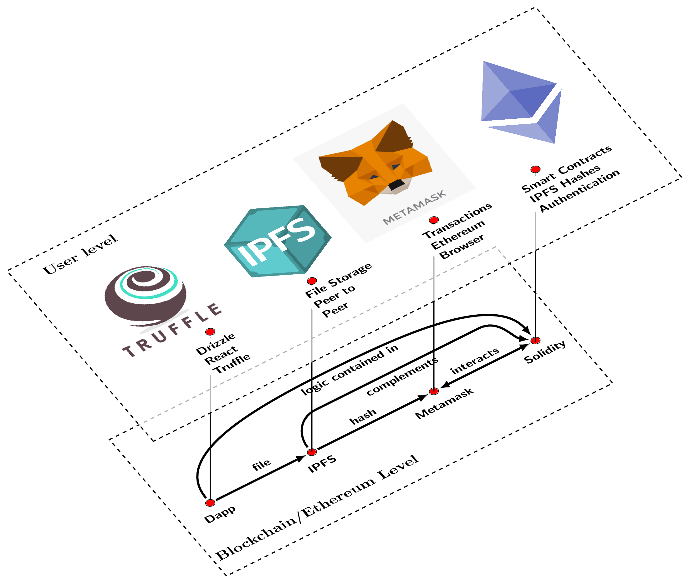

% Interaction diagram, LaTeX user level and TeX system software level
% Author: Agostino De Marco
% Based on diagram from Marco Miani and Pascal Seppecher.
\documentclass{article}
\usepackage{tikz}
%%%<
\usepackage{verbatim}
\usepackage[active,tightpage]{preview}
\PreviewEnvironment{tikzpicture}
\setlength\PreviewBorder{5pt}%
%%%>
\usetikzlibrary{positioning}
\newcommand{\yslant}{0.5}
\newcommand{\xslant}{-0.6}
\begin{document}
\begin{tikzpicture}[scale=1.1,every node/.style={minimum size=1cm},on grid]
% Software level
\begin{scope}[
yshift=-120,
every node/.append style={yslant=\yslant,xslant=\xslant},
yslant=\yslant,xslant=\xslant
]
% The lower frame:
\draw[black, dashed, thick] (-1.3,0) rectangle (8.2,4.8);
% Agents:
\draw[fill=red]
(7.5,2) circle (.1) % .pdf file
(5,2) circle (.1) % .ps file
(2,2) circle (.1) % .dvi file
(-0.5,2) circle (.1); % .tex file
% Flows:
\draw[-latex,ultra thick,shorten <=5pt,shorten >=5pt]
(-0.5,2) to[out=0,in=-180] (2,2); % latex
\draw[-latex,ultra thick,shorten <=5pt,shorten >=5pt]
(2,2) to[out=0,in=-180] (5,2); % dvi2ps
\draw[latex-latex,ultra thick,shorten <=5pt,shorten >=5pt]
(5,2) to[out=0,in=-180] (7.5,2); % ps2pdf, pdf2ps
\draw[-latex,ultra thick,shorten <=5pt,shorten >=5pt]
(-0.5,2) to[out=90,in=-180] (3.5,3.8) to[out=0,in=90] (7.5,2); % pdflatex
\draw[-latex,ultra thick,shorten <=5pt,shorten >=5pt]
(2,2) to[out=90,in=-180] (2.7,3.0) to[out=0,in=-180] (6.7,3.0) to[out=0,in=135] (7.5,2); % ps2pdfm
% Labels:
\fill[black]
(1.0,2) node[above=-3pt, scale=0.9] {\textsf{\bfseries file}}
(3.5,2) node[above=-5pt, scale=0.9] {\textsf{\bfseries hash}}
(6.25,2) node[above=-5pt, scale=0.9] {\textsf{\bfseries interacts}}
%(6.25,2) node[xshift=-1ex,below=-5pt, scale=0.9] {\textsf{\bfseries pdf2ps}}
(3.5,3.8) node[xshift=2ex,below=-5pt, scale=0.9] {\textsf{\bfseries logic contained in}}
(4.3,3.0) node[xshift=2ex,below=-5pt, scale=0.9] {\textsf{\bfseries complements}}
(1.3,0.1) node[above=-2pt, scale=1.1] {\textbf{Blockchain/Ethereum Level}}
(-0.5,2) node[below,scale=.9]{\textsf{\bfseries Dapp} }
(2,2) node[below,scale=.9]{\textsf{\bfseries IPFS}}
(5,2) node[below,scale=.9]{\textsf{\bfseries Metamask}}
(7.5,2) node[below,scale=.9]{\textsf{\bfseries Solidity}};
\end{scope}
% vertical lines for linking agents on the 2 levels
\draw[thick](6.3,5.1) to (6.3,0.9);
\draw[thick](3.8,4) to (3.8,-0.32);
\draw[thick](0.8,2.4) to (.8,-1.8);
\draw[thick](-1.70,1.02) to (-1.70,-3);
% User level
\begin{scope}[
yshift=0,
every node/.append style={yslant=\yslant,xslant=\xslant},
yslant=\yslant,xslant=\xslant
]
% The upper frame:
\fill[white,fill opacity=.70] (-3.1,0) rectangle (9.9,6); % Opacity
\draw[black, dashed, thick] (-3.1,0) rectangle (9.9,6);
% Agents:
\draw [fill=red]
(7.5,2) circle (.1) % .pdf file
(5,2) circle (.1) % .ps
(2,2) circle (.1) % .dvi
(-0.5,2) circle (.1); % .tex file
% the icons
\node[anchor=south,inner sep=0,xshift=-20pt,yshift=10pt,fill=white] at (-0.5,2)
{\includegraphics[width=2.5cm]{truffle.png}};
\node[anchor=south,inner sep=0,xshift=0pt,yshift=8pt] at (2,2)
{\includegraphics[width=2.5cm]{ipfs-logo.png}};
\node[anchor=south,inner sep=0,xshift=-5pt,yshift=8pt] at (5,2)
{\includegraphics[width=3.0cm]{metamask.png}};
\node[anchor=south,inner sep=0,xshift=20pt,yshift=8pt] at (7.5,2)
{\includegraphics[width=3.5cm]{ethereum.png}};
\fill[black]
(7.5,2) node[below right,,xshift=-20pt,yshift=-5pt,scale=.9,text width=2.5cm,align=left,fill=white]
{\textsf{\bfseries \mbox{Smart Contracts}}\\ \textsf{\bfseries IPFS Hashes}
\\ \textsf{\bfseries Authentication}}
(-2.5,5.5) node[anchor=west,inner sep=0, scale=1.1] {\textbf{User level}}
(5.1,1.9) node[below right,xshift=-20pt,scale=.9,text width=2cm,align=left,fill=white]
{\textsf{\bfseries Transactions}\\ \textsf{\bfseries Ethereum Browser} }
(1.9,1.9) node[below right,xshift=-10pt,scale=.9,text width=2cm,align=left,fill=white]
{\textsf{\bfseries File Storage}\\ \textsf{\bfseries Peer to Peer}}
(-0.5,2) node[below right,xshift=-20pt,yshift=-5pt,scale=.9,text width=2.5cm,align=left,fill=white]
{\textsf{\bfseries Drizzle}\\ \textsf{\bfseries React}\\
\textsf{\bfseries Truffle}}
;
\end{scope}
\end{tikzpicture}
\end{document}Created by David Li